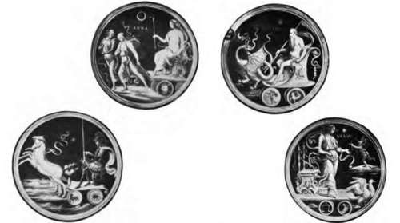
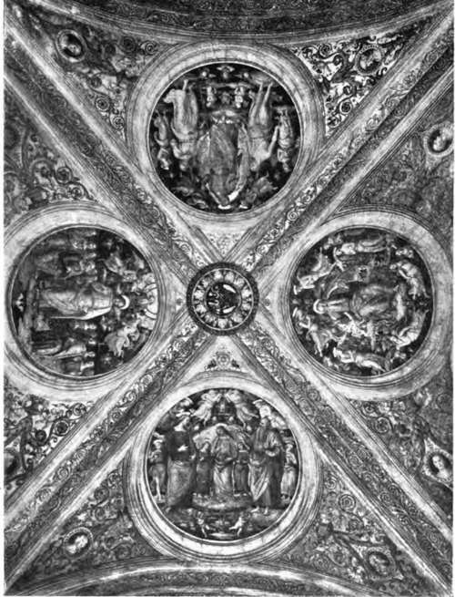

Keim's Process Foe Wall Painting. Part 3
Description
This section is from the book "Mural Painting", by F. Hamilton Jackson. Also available from Amazon: Mural Painting: -1904.
Keim's Process Foe Wall Painting. Part 3
The colours are ground in distilled water and are mixed on a tin palette with little wells on its surface. The wall must be kept wet, while being painted on, by spraying. Every variety of treatment is possible, and the process adapts itself to any individual style of painting. The colour may be used either transparently or with impasto, but the thinner the coat of colour the greater is the degree of security which can be obtained by the fixing. The Bev. J. A. Rivington says that the process is " far pleasanter and easier to work in than oil or water colours." It presents as perfect facility for transparent glazing as water colour, and for painting in body colour it even surpasses the capabilities of oil colours in its power of opaque treatment. The delicate tints when laid over darker tones do not darken, but keep their full value perfectly. Professor Roberts-Austen said that to a certain extent alterations might be made by washing out.
When the painting is finished and has been allowed one or two days to dry (in damp weather it is advisable to make use of fire-heat) the fixing takes place. The fluid from Munich is diluted for the first and second applications with two measures of distilled water, and for subsequent applications with three. It is advantageous to warm it by standing in covered vessels in pails of boiling water, as when hot it sets more quickly. It is first applied as spray by an apparatus with bellows; any drops which may run down should be dried up at once with clean blotting-paper. After drying for twenty-four hours it should be applied again more plentf ully, and with the apparatus nearer to the wall; let it dry again, and apply the spray again, using the weaker solution. After this it may be applied with a broad paint-brush. The test of perfect fixing is the rubbing of the surface with a white cloth without any soiling being visible. The darker colours may require as many as eight applications of the fixing medium. "Be careful to allow time for drying between each. Over-fixing will produce a grey, shiny spot. A few weeks after the fixing wash the surface with a copious spray of distilled water to remove any slight efflorescence." The Rev. J. A. Rivington thus describes the process of fixing. It" is done with silicate of potash treated with caustic ammonia and caustic potash, further treated with carbonate of ammonia. The effect of this upon silicate of potash is that silica is precipitated in a fine gelatinous form and ammonia set free. This latter volatilises, and carbonate of potash is formed, which is easily removed by washing, after the completion of the fixing. The solution is employed hot, so as to obtain a quicker and more perfect formation of silicate. The effect is that the pure colours are inclosed in silicates, whenever the pigments themselves do not take part in their formation. The action of the fixing solution is to form, in addition to the fresco carbonate of lime, a silicate of calcium, which makes the surface much harder, being as it is, with the carbonate of lime, a constituent of some of the hardest marbles. The finished painting will admit of any acid (except hydrofluoric) being poured over it, and it can be cleaned with caustic potash".
Roundels from the ceiling of the Collegio del Cambio, Perugia. By Perugino.
Sir Roberts-Austen thus summarised the chemical composition of the materials used and the actions and reactions of the various processes: "The ground is about equal parts of quartz, sand, and marble dust.* This ground is mixed with eight measures of lime and laid on the wall. The undiluted solution of acid contained 2*34 per cent, of acid (H^SiFg). The object of the treatment of the surface with this is to destroy the layer of carbonate of lime and form silico-fluoride of calcium, wjiich is not insoluble. Treatment with the soluble silicate follows.* The colours have foreign substances added in some cases to make them fix equally with the silica. The fixing solution (16*50 per cent, of silica) completes the cementing together of the particles of the ground and of the various pigments by forming an alkaline carbonate and double silicates. The cost of materials, acid, hardening fluid, and fixing fluid is about 3s. Ad. a square metre".
♦Free silica . . . . 62-28
Lime . . . . 26-96
Carbonic anhydride . ... 20*72
99-96.
He also drew out the differences between the old process of Yon Fuchs and Keim's later process as follows: "Von Fuchs recommended the treatment of the underground with the application of water-glass diluted with twice its bulk of water. Upon this the painting ground was laid one-tenth inch thick of ground marble or dolomite with not too much lime. In Maclise's journal it was stated to be one-third. The subsequent treatment, first with phosphoric acid diluted with six times its bulk of water, converted the crust of carbonate of lime into phosphate of lime, and then two applications of fixing water-glass, with intervals for drying, made the ground suitable for painting on with water colours. The fixing was then done by spraying with water-glass diluted with half its bulk of water, repeated, with intervals for drying. Keim's improvements were—to restore the original scheme in preparing the wall; in fixing the proportion of lime at one-eighth of the bulk of powder; third, in fixing more gradually and by a more diluted silicate. Von Fuchs found that silica combined more readily with two bases than one, and consequently water-glass became insoluble more quickly when mixed with earths or mineral oxides, forming double or treble silicates. It adheres better to marble and dolomite than to quartz, though a little lime with quartz improved its cementing powers. With gypsum it was not satisfactory".
♦Silica . . ... 2203
Potash (KaO) . . ... 8*19
Water . . > . . . 68-92
9914.
Ceiling-paintings by Perugino, in the Stanza delV Incendio del Borgo, in the Vatican.
Canvas of proper texture prepared by soaking in a special solution forms a suitable ground for the colours which are laid on and fixed as in the case of the prepared mortar. The work is equally permanent in character and entirely unaffected by light. It is uninflammable, and can be cleaned without the least injury to the most delicate colours. Professor Church says the commercial solutions of water-glass contain from 28 to 60 per cent, of the alkaline silicates, and that the preparations made for the use of painters "may be trusted." They should be carefully kept from the air, which contains carbonic acid, and all calcareous matters, such as gypsum, zinc white, etc., banished from their neighbourhood.
The claims which are made of absolute permanence and unalterability for this process make it incumbent upon any artist making use of it to put all the knowledge and feeling which he possesses into his work. By his works he will be judged; there will be no added glamour by the passing of the years, nor can any friend say by way of excuse that there has been deterioration. And this may well give the artist pause before essaying so perfect a process, for fashion changes and the triumphs of one decade are often paled by the newer lights and the fresher talent of the next, and the painter himself may hold a different opinion on the merits of the work over which he triumphed on its completion, which stares unaltered at him who looks at it with different eyes. But for him who has full confidence in his powers and in the permanence of his opinions, and has time allowed him sufficient to undertake the various operations in their proper sequence, this process seems to promise immortality, or such measure of it as may be gained by the conservation of his work such as he had imagined it, and in the condition in which his last completing touches left it.
Continue to: